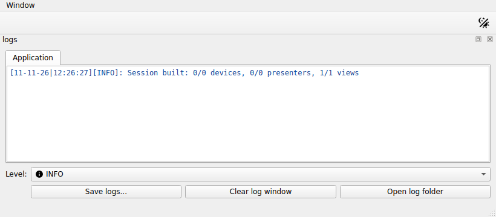

How to configure logging¶
redsun reports what it does as log messages: the components it builds, the
services it starts, and anything that goes wrong. This page shows how to
choose how much of that you see, where it goes, and how to log from your own
code.
All of these messages go through one Python logger, named redsun, which
passes each one on to several places. Point at a shape to read more:
Each line on the console starts with the time, the level, and the class and name of the component that wrote it:
[29-08-26|14:02:46][INFO][MyMotor -> stage]: Connected
[29-08-26|14:02:46][DEBUG][MyMotor -> stage]: setpoint=1.5 (motor.py:88)
The second line is at DEBUG, so you only see it after lowering the level,
as the next section shows. A line at any level other than INFO also ends
with the file and line of code that wrote it.
Log files describes every part of a line.
Set the level for a session¶
Pass log_level to the session. It takes a logging constant or a level name,
like logging.Logger.setLevel:
import logging
from redsun.qt import QtSession
class MyApp(QtSession):
config = "session.yaml"
app = MyApp(log_level=logging.DEBUG)
Session.from_config takes the same keyword:
Without it the logger keeps its level, which is INFO unless something
changed it.
Note
The level is a keyword, not a configuration file key, because you usually decide how much to report per run, not per session.
Set the level anywhere else¶
set_level sets the logger's level directly, for
example in a script or notebook without a session:
Names are case-insensitive, so a command-line flag's value works as is, and an
unknown name raises ValueError.
Find a session's log file¶
A session also writes the records of each run to a file, which it opens when
the build reads the configuration and closes in shutdown(). Each launched
service gets a file of its own. For a session named my-lab with a launched
service camera_ioc, the files look like this:
<root>/logs/my-lab/
|-- app/
| |-- 2026-09-13T14-02-46_8120.log the run that started at 14:02:46
| `-- 2026-09-13T09-15-02_4410.log an earlier run
`-- services/
|-- 2026-09-13T14-02-46_8120.camera_ioc.log
`-- 2026-09-13T09-15-02_4410.camera_ioc.log
<root> is storage.base_dir from the session file, or your user data folder
when that isn't set. Each file name is the time the run started and the id of
its process. Log files gives the data folder on
each platform and how long the files are kept.
session_log returns the handler writing the current
run, and session_log("camera_ioc") returns the one writing that service's
file. The handler's files property lists its files with the oldest records
first.
Log from a service¶
The session logs a service's output under redsun.service.<service>. A line
that is a JSON log record keeps its level, time and traceback, under
redsun.service.<service>.<its logger>, and any other line, such as a print,
is logged at DEBUG. The session reads two JSON layouts.
A Python service calls
configure_logging once, at startup:
After that, the service's logging records reach the session at the level
the session records at. So do its loguru records when loguru is installed.
loguru is a logging library that some service frameworks use in place of
logging: fastcs is one, so a fastcs service's own messages arrive too.
Each record keeps its level, time, logger name and traceback. If you start the
service outside a session, it logs at INFO.
A service not written in Python writes one JSON object per line, in either of
two layouts: the layout of loguru with serialize=True, or an object with the
fields name, levelno, created, msg and exc_text of a
logging.LogRecord.
A service's records follow its logger's level, so
logging.getLogger("redsun.service.camera_ioc").setLevel(logging.INFO) hides
its DEBUG output.
Show the logs in the application¶
LogView is a built-in Qt view that shows
the session's records. Name it under views in the session file:

The view sits at the bottom of the main window and shows every record of the session, including those from the build, coloured by level. Application records are on the Application tab, and a Services tab appears once a service logs something, with a selector for one service or all. The view keeps the latest 10 000 application records and 2 000 per service, so a noisy service never pushes application records out. Its controls are:
| Control | What it does |
|---|---|
Level |
shows only records at or above the chosen level, on both tabs; lowering it again brings hidden records back |
Save logs... |
writes the records of the tab shown to a file you choose, whatever level is shown: the application's, the selected service's, or every service's. It copies the session's log files, so records the view no longer holds are saved too |
Clear log window |
empties the console of the tab shown; the records stay available to Level and Save logs... |
Open log folder |
opens the folder holding the session's log files in the system's file browser |
Without session log files, as outside a session, Save logs... writes the
records held in memory and Open log folder is disabled.
The session of the picture
A session written in Python declares the view as any other:
Open the logs in a window of their own¶
When the main window has no room for a dock at the bottom, name
LogWindowAction instead. It adds
a Logs entry to the View menu, and choosing it opens the same log view
in a separate window:
The window closes like any other, and choosing Logs again while it is open brings it to the front rather than opening a second one.
Send records somewhere else as well¶
add_handler adds a destination beside the existing
ones, and remove_handler takes it away:
import logging
from redsun.log import add_handler, remove_handler
to_file = logging.FileHandler("session.log")
add_handler(to_file)
...
remove_handler(to_file)
A handler without a formatter gets the one stdout uses, so records read the same everywhere. To keep your own, set a formatter first:
to_file.setFormatter(logging.Formatter("%(asctime)s %(levelname)s %(message)s"))
add_handler(to_file)
A handler's own level can make a destination quieter than the logger but never
louder, because the logger's level decides which records exist. To write
everything to a file while the console stays at INFO, lower the logger and
raise the console handler.
Log from your own component¶
Inherit Loggable and use self.logger, an adapter on
the redsun logger that fills in the class and name you see in the output:
from redsun.log import Loggable
class MyController(Loggable):
def __init__(self, name: str) -> None:
self.name = name
self.logger.info("Initialized")
The name shown is the component's name attribute, so a message tells you
which instance wrote it:
A class without a name, or with an empty or None one, logs with only the
class in the brackets:
Keep redsun out of your own logging¶
The redsun logger propagates, so a handler on the root logger also receives
redsun's records. To keep them out, raise redsun's level or stop
propagation:
In a session, redsun never touches the root logger or any logger outside
redsun. configure_logging does, because it sets up all the logging of a
service process.